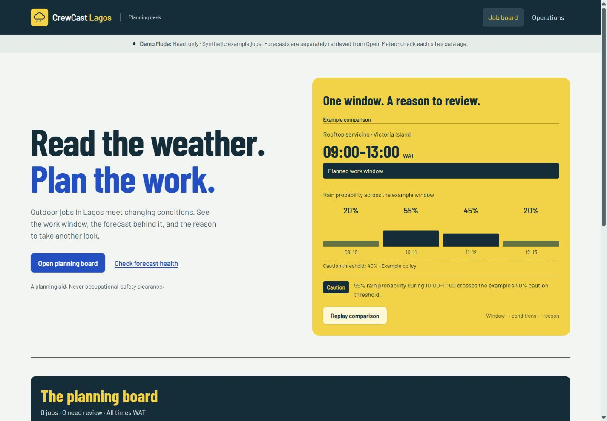
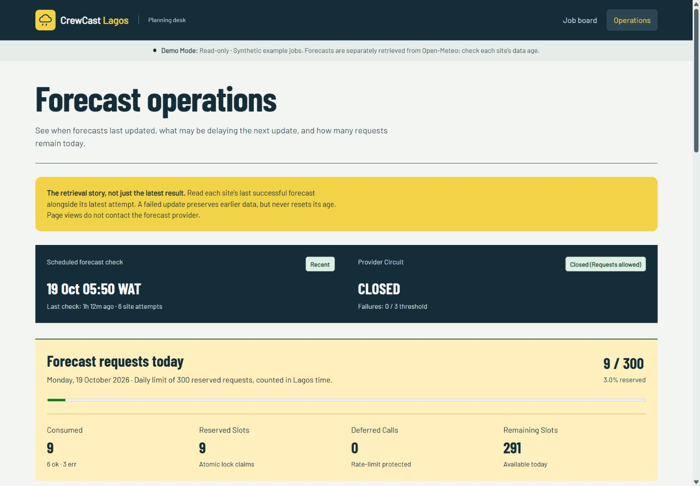

The published interface
The published CrewCast interface, captured on 19 October 2026. Start with a work-window comparison, move into the planning board, then inspect forecast health in Operations.


The optional comparison replay highlights those steps in sequence. Repeated activation settles it; keyboard and reduced-motion activation are immediate. Try the comparison and planning board.


The problem
Outdoor work plans can change when rain, gusts, or heat enter a job window. A recommendation without its retrieval time can be misleading: an apparently suitable job may only be supported by an old forecast. Dispatchers need both an explainable signal and a clear indication of whether its underlying data is still current.
What CrewCast does
- Compares scheduled job windows with four hourly Open-Meteo metrics and versioned policy thresholds.
- Shows reasons for caution or unsuitability and the age of the forecast used.
- Suppresses favourable recommendations once a forecast becomes stale; after expiry, it shows no current recommendation.
- Provides an Operations page with per-site sync history, request budget, circuit state, and retry outcomes.
- Updates the selected day's server-rendered board without jumping to the page top; failed requests keep current jobs visible and offer retry or full-page navigation.
Key decisions
Separate retrieval from web requests
Page loads read stored PostgreSQL records; they do not contact the weather provider. An hourly GitHub Actions schedule checks due sites and writes sync attempts and forecast snapshots to the same Neon database as the Render web app. An automatic scheduled run on 26 September 2026 completed successfully and appeared in the public Operations history.
Make freshness part of the answer
Fresh forecasts support an active recommendation. Between four and twelve hours old, a previous result is historical context and a favourable signal is suppressed. Beyond twelve hours, CrewCast stops presenting it as a current recommendation. This protects against delayed schedules and provider failures without pretending the data is always live.
Bound and explain provider traffic
A PostgreSQL-backed Lagos-calendar budget reserves at most 300 calls per day. The sync path records each attempt, deduplicates identical forecast content by hash, and uses retry and circuit-breaker rules for transient provider failures. The public demo shows outcomes without exposing internal provider error strings.
Enhance the working page, keep the backend authoritative
TypeScript requests only the selected day's Django-rendered board. It preserves the date strip's position, handles browser history and cancels obsolete requests. No client forecast cache can conceal advancing age. Native anchored links remain available without JavaScript; policy evaluation and permissions stay on the server.
CSS and native Web Animations provide selective explanatory motion without a runtime library. WOFF2 subsets reduced the two font downloads from about 214 KB to 48 KB. Introductory motion is skipped when the device reports data-saving mode, a 2G/3G connection or at most two cores.
Verification and limitations
The 19 October 2026 CI run passed 102 application tests with PostgreSQL and Redis, plus six frontend tests for comparison highlights, out-of-order date responses and failure recovery. Inspect the released changes.
Browser checks covered desktop and phone layouts, keyboard, reduced motion, JavaScript-disabled public navigation, browser Back and offline retry. Slower CPU/network emulation was checked; physical lowest-end phones and production Core Web Vitals were not measured.
GitHub schedules can be delayed or skipped. This is a non-commercial educational prototype with synthetic jobs, not a live customer dispatch system. Redis is optional and is not a hosted dependency of the public demo; when absent, reads use PostgreSQL directly.